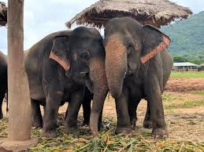

Elefante asiático
 Los elefantes asiáticos son una especie en peligro de extinción y se pueden encontrar entre 3.100 y 3.600 en 69 áreas protegidas de Tailandia, nación que alberga aproximadamente el 15% de los 52.000 ejemplares que viven hoy en la naturaleza
Amenazas
Pérdida de hábitat por la expansión agrícola y el aumento de la población humana. Caza furtiva por sus colmillos. Conflictos con humanos en zonas agrícolas. Electrocución por cercas eléctricas inadecuadas.